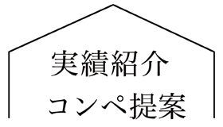
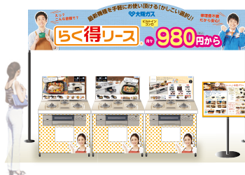
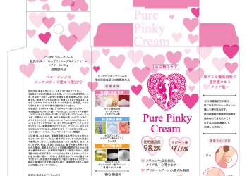
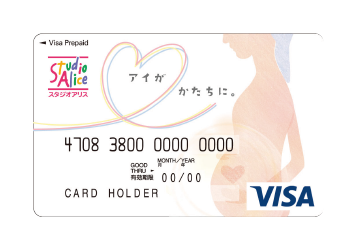
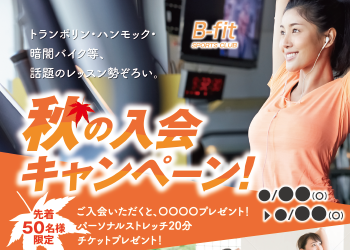
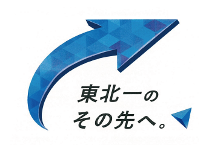

コンペ提案実績
概要：一次受け案件を増やす目的もありましたが、自分の実力と他者との能力を客観的に捉え、技術の吸収をしてまいりました。
-

▷ 大阪ガス-ガス展
夏の大阪ガス展のコンペが大阪ガス主催で毎年行われており、参加した会社の１5社のうち７社の会社が受注に至り、選ばれた会社は各カテゴリーごとに分けられ制作するのですが、私はガスコンロの紹介パネルを担当させていただきました。
-

▷ 美白ケア-パッケージ提案
商品パッケージの提案依頼をいただき商品ロゴのハートをメインにし、スキンクリームというこもあり優しい雰囲気を出した提案を致しましたが、最終選考で今回は雰囲気を変えてみたい決断で上司の制作した案になってしまった。
-

▷ VISAカードコンペ
スタジオアリスのVISAカード提案になります。フォトスタジオをイメージした案とマタニティを強調したフォトスタジオならではのVISAを提案しました。こちらは受注には至りませんでした。
-

▷ スポーツクラブのチラシ提案
B-fitスポーツクラブのチラシ提案になります。元々は自社内で制作していたのですが、マンネリ化もあり提案がよければチラシの依頼をするという話から始まり、私と上司の案が好評で最終選考まで進みましたが、上司の案に決定しました。
-

▷ 自社ロゴ提案
東北の広告業界で売り上げがトップになったことで、新たに自社のスローガンロゴを提案することになりました。私は濃淡の異なったピースを社員に見立てて矢印にして東北一のその先へ行くには社員が同じの方向を目指すことが必要の意味を込めた案。